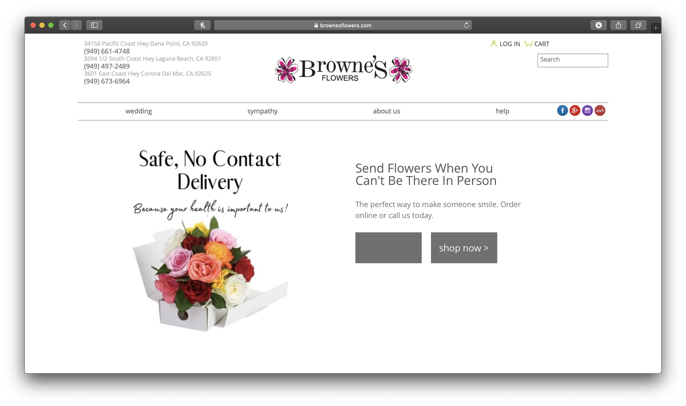
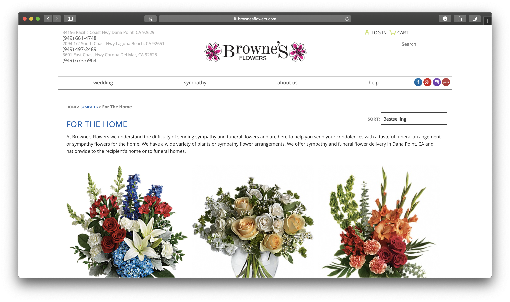

Seaside Flowers
Seaside Flowers is a local flower stand that sells handcrafted bouquets. The stand is located near a shopping center facing the street. It can be approached by people walking on the nearby sidewalk or seen by cars driving on Pacific Coast Highway. As a small business, Seaside Flowers prides themselves on unique flower arrangements and quality customer service. They offer a large variety of fresh, high-quality flowers that are the perfect addition to both big and small occasions.
The consistent target audience is typically adult women and some adult men. Wives, mothers, young female adults, event planners and brides-to-be are year-round customers. For holidays like Mother's Day or Valentine's Day, the target audeince shifts towards men inlcuding husbands, sons, etc.
The target audience's goals shift depending on the person, event, and time of year. However, the overarching goal is to attain something lively and beautiful to lift a person's spirits. For everyday customers, flowers act as a pick-me-up, kind gesture, or house decor. For the passing of loved ones, holidays, or anniversaries, customers purchase arrangements as gifts. For weddings, funerals or other special events, the main goal of purchasing flowers is for decoration.
https://www.brownesflowers.com
 Seaside Flowers' originally designed arrangements are perfect for all occassions- big or small. Browse our simple designs or unique bouquets below!
Peach roses bouquet in vase
Seaside Flowers offers customized arrangements. Just tell us your event or occasion, special requests, and price range!
Intricate wedding center piece on table
Located in Dana Point, CA, Seaside Flowers has been offering handcrafted bouquets for over 20 years! As a small business, we at Seaside Flowers pride ourselves on our unique flower arrangements and quality customer service. We offer a large variety of fresh, high-quality flowers that are the perfect addition to any occassion- no matter how big or small.
We do special events like weddings and funerals upon request. Also, we are available any time for a simple arrangement pick-me-up!
Front view of Seaside Flower stand
Contact us so we can meet all of your flower needs as well as answer any questions or concerns. Or feel free to stop by our stand.
We look forward to your business!
Close up view of flowers on the Seaside Flower stand